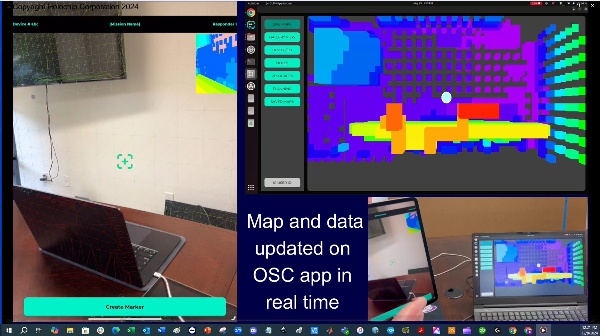
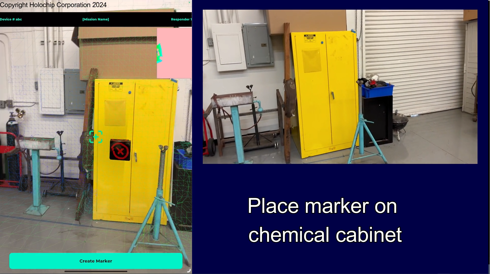

Rendering an OctMap
Overview
This sample demonstrates several advanced Vulkan techniques working together in a way that mirrors how a real-world engine might be structured:
-
Octomap instanced rendering — dynamically display a voxel occupancy map generated by ARKit SLAM using GPU instancing.
-
Gaussian Splat rendering — render the same scene as a GLTF model with embedded 3D Gaussian Splats. Note that the splats here are a simplified representation for demonstration purposes and for providing approximate texture maps from drone, ROS, or walkthrough capture — not a photorealistic reconstruction.
-
Keyboard-only navigation — the entire application, including the overlay menu and 3D camera, is fully operable without a mouse.
Background: SLAM, Point Clouds, and Occupancy Maps
SLAM or Simultaneous Localization and Mapping is the main driving force behind modern robotics and AR. SLAM is a process which allows us to interact with the physical world. The main step in Localization involves determining where the camera is at the present moment in relation to where it has been in the past. The main idea is: if you know where you were (a fix) and you know your momentum and direction, along with the time, you will be able to predict where you will be in the future. This process is called Dead Reckoning.
When we want to do Dead Reckoning with a camera and an IMU, we’re moving into Visual Inertial Odometry. However, this only gives us knowledge of where we are in relation to where we were, or Localization. There is no map that is generated nor saved within that process.
So, at one frame we have a point cloud from our VIO efforts, and the next frame will have another point cloud. If we can register one point cloud with another, then we can join them into one point cloud. This type of point cloud registration is commonly done with things like Iterative Closest Point.
Now, with our joined point cloud, we need to be able to recognize that sometimes, we’ve been places before, or we’d wind up with disjoint maps. That’s where Loop Closure comes in.
The preceding high-level background describes how we get to a situation where there’s plenty of desire to be able to work with and render point clouds that are dynamically generated. ARCore and ARKit are both able to create a point cloud map, and everything from drones to robots use this same basic system to register and deal with the world around them. To navigate a room, a drone/robot might need to be able to determine if a voxel is occupied or not by using an occupancy grid. This gives rise to solutions which are optimized for storing such maps that can be dynamically updated in real time.
The library octomap provides such functionality.
How to Use the Sample
Controls
The sample is designed to be fully operable without a mouse. All navigation and menu interaction can be performed from the keyboard.
| Key | Action |
|---|---|
|
Move camera forward / left / backward / right |
|
Pitch camera up / down |
|
Yaw camera left / right |
Mouse drag (optional) |
Free-look camera rotation |
| Key | Action |
|---|---|
|
Move focus between buttons |
|
Activate focused button |
|
Dismiss popups / cancel |
| WASD camera movement always works even when the overlay menu has keyboard focus. |
View Modes
Use the buttons in the overlay window to switch between the three rendering modes:
-
Octomap — renders the voxel occupancy map as instanced cubes. Each occupied voxel is drawn as a single instance. The
.btbinary tree file is orders of magnitude smaller than an equivalent GLTF mesh, making it practical for city-scale maps on drones, ROS-powered robots, and other embedded devices with limited storage. -
GLTF — renders the same scene as a standard GLTF mesh. A GLTF file encodes full geometry, normals, UVs, and textures for every surface, so it is a far larger representation of the same spatial information. By design, the GLTF and Gaussian Splat assets in this sample are structured as grid cells sourced from a database, which is why the map appears as a tiled arrangement rather than a single continuous scene.
-
Gaussian Splats — renders the scene using 3D Gaussian Splats embedded in a GLTF file. Like the GLTF view, the splat data is organised as database-sourced grid cells. The splats in this sample are not photorealistic; they are a simplified representation intended for demonstration and for providing approximate texture maps from drone, ROS, or walkthrough capture. Compare this view with the Octomap to appreciate how much more visually descriptive even a simplified splat representation is for human operators, while the Octomap remains far more compact for embedded devices that must store city-scale maps.
Key Features in the Code
1. Octomap Instanced Rendering (render_octomap.cpp)
The Octomap is loaded from a .bt binary tree file using the octomap library. Each occupied leaf node in the octree is extracted and converted into a per-instance InstanceData struct containing position and size. These are uploaded to a Vulkan device-local buffer and rendered in a single instanced draw call.
// Each occupied voxel becomes one instance
struct InstanceData {
glm::vec3 position;
float size;
};The vertex shader (render_octomap/glsl/render.vert) reads position and size from the instance buffer and expands each voxel into a unit cube scaled to the correct octree resolution. This approach scales to very large maps (tens of thousands of voxels) with minimal CPU overhead per frame.
2. Gaussian Splat Rendering (render_octomap.cpp, splat.vert / splat.frag)
Gaussian Splats are stored as per-point attributes inside a GLTF file. The sample loads the GLTF scene graph and renders the splat geometry using a dedicated shader pair (render_octomap/glsl/splat.vert and splat.frag). The splat shader reconstructs the 2D Gaussian footprint in screen space and blends it with alpha compositing to produce the characteristic soft, blended appearance.
| The Gaussian Splats in this sample are not photorealistic. They are a simplified representation intended for demonstration purposes and for providing approximate texture maps as captured by a drone, ROS-powered device, or other walkthrough capture system. The goal is to give human operators a richer visual context than the raw voxel map, not to produce a high-fidelity reconstruction. |
Compare the file sizes of the .bt octomap and the splat GLTF to see the storage trade-off: the octomap is orders of magnitude smaller because it stores only occupied-voxel positions and sizes, whereas a GLTF encodes full geometry, normals, UVs, and textures for every surface. This difference is critical for drones and ROS-powered devices that may not have enough storage for GLTF-scale maps of a city. The octomap format allows such devices to hold city-scale maps in memory, while the GLTF and Gaussian Splat assets are intentionally structured as database-sourced grid cells — which is why the map appears as a tiled arrangement rather than a single continuous scene.
3. Shader Pipeline (CMakeLists.txt, shaders/render_octomap/glsl/)
The sample registers its GLSL shaders via SHADER_FILES_GLSL in its CMakeLists.txt, which causes the build system to compile them to SPIR-V using glslc at build time:
| Shader file | Purpose |
|---|---|
|
Octomap instanced voxel rendering |
|
GLTF mesh rendering |
|
Gaussian Splat rendering |
The compiled .spv files are written back to the source tree alongside the .glsl sources so they are available at runtime without a separate installation step.
Real-world Project Background
Holochip is an awardee on the U.S. Environmental Protection Agency (US EPA) Phase II SBIR program, Localization and Mapping AI Application (LAMA). LAMA is an iOS and Android compatible SLAM solution for disaster response teams. It will allow responders to map, localize, place markers, notes, voice recording, and use AI object detection in large spaces, and communicate that information with on-site coordinators in GPS- and network-denied environments.
 |
 |
While Octomap rendering provides excellent representation of the real world map in an easy to navigate manner at a size that’s practical for embedded devices to house very large maps, humans benefit from a more textured scene. This is where capturing of Gaussian Splats is beneficial. This sample demonstrates the same scene rendered as a GLTF and a GLTF with embedded Gaussian Splats. Please note how much smaller the octomap is to store and use, and how much easier it is to view a Gaussian Splat scene as a human to understand visually what objects are.
For further details on this project contact info@holochip.com